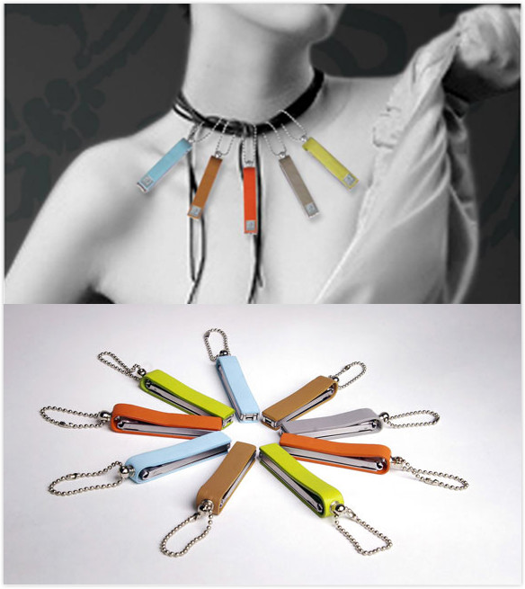

看书、写字，心里那只消费怪就不那么痒了。
本篇是读《Speculative Everything》的第四章《Consuming Monsters》的读书笔记。
科技时代的结果是豢养了一只消费怪，科技无论初始为何物，尽头往往是具有消费能力的产品。消费主义被生活方式、意识形态、自我认同、社会地位所裹挟，植入在消费者的身体里，被碾压挤碎后沉淀的，是整个科技时代巨轮前进的养料。在科技到市场的一元体系下，消费主义让人类用感官刺激评价价值，为好坏利弊架设的天平是往往是自我满足。
人类的行为模式，是在能力膨胀之时思考或或幻想伦理、道德、宗教、信仰等非科学的约束，就像机器人时代里的阿西莫夫三定律、克隆时代里的克隆人争论。二百年的机器时代里，人们仍然毫无约束地衍生着自己的能力，而30年的互联网时代、20年的现代生物技术时代，正开始不动声色地触动人类最敏感的那片神经。
生物技术时代
很可能给人类的认识产生不可小觑的变化的，也许是现代生物技术的吊诡。尽管生物技术的终极产物并不像机器和互联网那样深入到我们的生活，但它已经开始显露出一些我们在过去的几十万年里未曾遇见的问题，例如：生命是可以被设计的吗？
不可否认的是，取决于对生命的定义，人类在相当一定程度上完成了对生命的设计，这样的能力使得我们的社会真正成为穹顶之下的实验笼，设计者要做的是无所不能地实现一个被需要的能力，并给它标上价值，消费者像豚鼠一般浑然不知，周而复始地奔波，用一种类型的自我价值（金钱付出）或另一种类型的自我价值（功效满足）。
就这样，当技术的可能性突破了人类几十万年以来坚守的底线，真正让人焦虑的是，如此底线的突破也许能够改变一切，让我们烧毁此前所有机器时代的科幻小说，而恐惧来自于不可名状的未知。这样不可名状的未知便是启发式设计（Speculative Design）的用武之地：它用“问问题”的方式让我们探索和讨论科技无法到达的道德、文化、社会和政治意味。
We can use speculative designs to debate potential ethical, cultural, social, and political implications
你所看到这些奇妙和精巧的设计，都不是在解决某个实在的问题，而是提出一个好的问题，这样的问题让我们思考，诸如现代生物技术的时代将给我们带来了什么。
James Auger和Jimmy Loizeau在2009年设计了“猪笼草系列家用机器人（Carnivorous Domestic Enterainment Robots）”，其中的一个设计“蝇纸钟”（Flypaper Robotic Clock）受到猪笼草捕捉蚊蝇的启发，生物能量的自然转化被运用在电子设备里，整个设计包含一个长条的白色粘蝇纸轨道、一个生物电转化装置、一个LED时钟，苍蝇飞入粘蝇纸轨道被传入生物点转化装置，最终为LED时钟供电。
同个系列还有其他多款产品，都可以在他们的首页上找到。这样的设计也许不具备广泛推广的可能性，但是它的价值在于通过一个可操作和感知的器件，让我们去辩论（Debate），从而思考，而非享受结果。
公民消费者
另一个有趣的话题是对公民角色和消费者角色的讨论。消费者为中心（Customer-centric）的一切让我越来越意识到是消费主义的附产品，它从设计或商业原则的角度，合情合理地帮助消费主义的肆虐。而公民和消费者的区别是：前者更加关心自己与社会的关系，而后者更关心自己与消费品的关系；前者复杂的关系里更需要人思考诸多因素，而后者更关心消费品是否能够达到承诺的功效。
最直接的例子是一个新兴经济体中对汽车的消费行为里不会考虑汽车对于公共环境的影响，而优先考虑车辆的使用价值。而启发式设计的价值还在于，在一个技术还处于萌芽阶段的时候，就能够用挑战和思考让未来的消费者作为一个公民，进行独立的思考，而不止是完成自我价值。著名的科幻小说家Frederick Pohl说：
A good writer does not think up only the automobile but also the traffic jam - 好的作者不只是想汽车的好处，还得想想交通堵塞的问题。
科幻小说作为启发式设计的一种形式，在某种意义上承担了科技的“公民教育”，用情境的手段帮助“未来的消费者”思考科技所带来的多个可能性（而绝不止是最好的那一个）；而在新兴经济体中，科技发展往往后发，速度较快，设计通常为市场化服务，这样以设计为载体的“公民教育”少之又少。
这样的设计机制往往在科技真正发达的国家已经形成体系，通过丰富的设计手段，帮助消费者思考科技和产品背后的社会、政治、道德、环境意味（implications），成为真正的公民消费者，而在中国，确实缺少大量此类的设计教育，设计都是为市场化和增加消费品价值服务，并且作为响亮的设计思潮进行反复宣传，类似这款获得红点大奖，售价百元的指甲刀：

请不要误会我的意思，我并没有否定价值对于消费品的价值，只是希望在这个干货、范例、实践、红点大奖泛滥的时代，看到更多设计可以帮助我们反思的东西。
科技和设计
虽然不愿意承认，推动人类前进的核心力量依然是科技，既是对自然规律的无限探寻，设计只是取巧而已。但是技术和设计融合的趋势早在1960年代的EAT（Experiment in Art and Technology）就已经开始，最具代表性的是1970年代到80年代初施乐PARC的图形界面（Xerox PARC），以及一脉相承的苹果设计：
这也是交互设计的起源：用一种方式更好地和机器进行互动，它的本质依然是为“科技下的蛋”、消费品服务的。另一种设计为科技服务的概念是所谓“SciArt”（科学艺术），它用具有美学特性的手段去让大众更好的理解科学，在Dunne和Raby夫妇看来，这既不是科学、也不是艺术。通常，它们常见于科学博物馆，或者科技企业的宣传工具，例如著名的Mathematica: A World of Numbers... and Beyond
启发式设计的含义是让人思考，而不是简单地用设计的方式宣传、讲解、包装某个科技，在现代生物科学领域，以下都是设计和科技结合引发人们对科技本身进行思考的好例子：
首先是Eduardo Kac的《Natural History of the Enigma, transgenic work（2003-2008》，Eduardo Kac创立了一种叫做transgenic art（转基因艺术）的设计形式，在这个案例里，他把自己血液中提取的DNA与红色牵牛花的基因序列融合，花瓣中的红色静脉中，似乎展现出一种作者本人血液流淌的效果。那么问题是，如果基因本身是定义某个身体标识的基础单元，人与花基因在技术上的结合意味着什么？
另外一个较为惊悚的案例是《The Tissue Culture and Art Project, Victimless Leather: A Prototype of Stitch-less Jacket Grown in a Technoscientific "Body", 2004》，来自于Oron Catts and Ionat Zurr，设计师用培养皿制造了一个活的“人形状”蛋白体，期待有天长成可以穿在身上的衣服。有趣的是，当MoMA展出这件展品时处理不当，最终导致这个培养皿中的人形身体最终死亡，它使得MoMA现代艺术馆历史上首次“杀死”了一个生命体，那么当生命可以被制造，我们如何重新定义生命？
另外一个有趣的例子是《Dressing the Meat of Tomorrow, 2006》，设计者用基因工程方式制作了转基因的食品，再用塑形和上色的方式把它们还原成原来的样子，这些依靠培养皿制造的食物，保持着动物器官或部位的模样，但是它的问题是：素食主义者是否因为动物因为屠宰而受苦的“肉食”而选择食用？人是否可以食用具有人类基因的肉食？
以上的项目，都是希望通过设计的方式去“问问题”，而不是去解答，或者成为科技的宣传和美化者，也不是用科学完成一件更好的艺术作品。它们的目的都是问题，而不是解答。
写在最后
本篇所讨论的是科技发展所衍生的消费主义在某种程度上眷养了一批缺乏公民意识、无独立思考能力的消费者，而诸如现代生物技术的发展，在机器时代之后对人类的未来产生新的一轮未知冲击。任何一个技术的开端都需要完备的公民教育，让未来技术的消费者能够在享受技术带来的便利前就开始思考技术的多种可能性（而不只是最好的那一种），以及它对于设计、道德、政治、和环境的影响。设计在其中扮演的角色，不是让消费者更完美地享受科技价值，而是“克制”，只有“克制”方能自省。
当我看完这一章（虽然逻辑太混乱，抓不到主线），开始明白我总是格格不入的原因，我处的这个设计圈子，有人降低节操、有人情怀至上、有人唯我唯心、有人大谈道行、有人摆弄数字，无论如何，最让大家激动地还是有多少的消费者在使用我们的设计，那些台上耀眼的设计英雄们，这总让我有偏见地感受到没有人是“克制”的，也无人“自省”，这个圈子里总少了一点我无法解释的意味，那就是另一种可能。
互联网时代眷养着更多的消费怪，它们毫无克制和更低成本地吃着信息带给他们的乐趣，而从不思考和产出，它们只把别人的东西打上“已阅”的标签再供人咀嚼，当吞咽成为一种习惯，要做的也只有躺着，接着段子手赖以为生的杂碎。现在，和我一样，把左（或右）手伸出，做一个空握手机的手势，上下摆动大拇指，对了，那就是“接食”的动作。
有人说，你老写些这些东西到底有什么用？没什么用，沉下心来读书和写字，让我克制和自省，心里那只“消费怪”就不那么痒了。